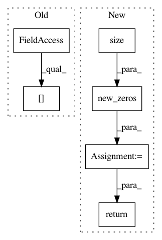

27568a7ebed1a35f08ac0390f35b3de9b8dad0dd,fairseq/models/levenshtein_transformer.py,LevenshteinTransformerModel,initialize_output_tokens,#LevenshteinTransformerModel#Any#Any#,491
Before Change
)
initial_attn = torch.empty([0])
if getattr(self.decoder.layers[-1], "need_attn", True):
initial_attn = torch.zeros([src_tokens.size(0), 2, src_tokens.size(1)]).to(
initial_output_tokens
)
After Change
initial_output_tokens[:, 0] = self.bos
initial_output_tokens[:, 1] = self.eos
initial_output_scores = initial_output_tokens.new_zeros(
*initial_output_tokens.size()
).type_as(encoder_out.encoder_out)
return DecoderOut(
output_tokens=initial_output_tokens,
output_scores=initial_output_scores,
attn=None,
step=0,
max_step=0,
)
class LevenshteinTransformerDecoder(TransformerDecoder):
def __init__(self, args, dictionary, embed_tokens, no_encoder_attn=False):
In pattern: SUPERPATTERN
Frequency: 3
Non-data size: 6
Instances
Project Name: elbayadm/attn2d
Commit Name: 27568a7ebed1a35f08ac0390f35b3de9b8dad0dd
Time: 2019-11-13
Author: myleott@fb.com
File Name: fairseq/models/levenshtein_transformer.py
Class Name: LevenshteinTransformerModel
Method Name: initialize_output_tokens
Project Name: rusty1s/pytorch_geometric
Commit Name: f6532b3c4c329e6d5d5fb846acc441df47616c4c
Time: 2020-03-22
Author: matthias.fey@tu-dortmund.de
File Name: torch_geometric/nn/models/gnn_explainer.py
Class Name: GNNExplainer
Method Name: explain_node